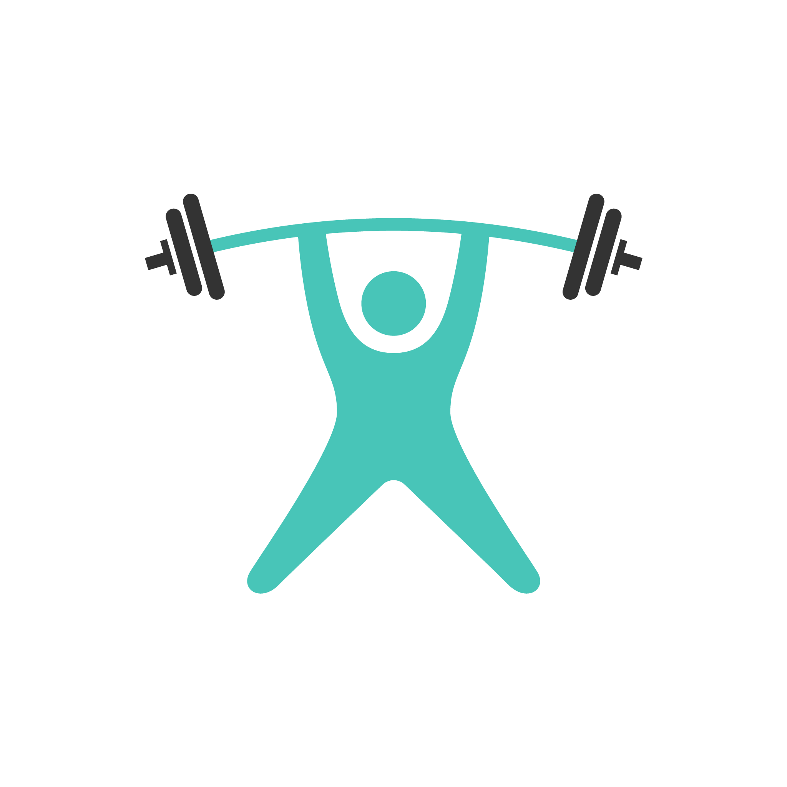

<!doctype html><html><head><meta charset="utf-8"><style>
/* TTN One trainer tip, 1080 x 1350. Rebuilt 2026-11-03 to match posts/2026-11-*-tip-* (the original template was lost in a reset).
   spec: {"hd":"FILM THEIR FIRST SQUAT.","em":"SHOW THEM IN MONTH THREE.","hand":"That's the proof<br>they need.","fs":0 (optional fixed size)} */
@font-face{font-family:M;font-weight:900;src:url(node_modules/@fontsource/montserrat/files/montserrat-latin-900-normal.woff2)}
@font-face{font-family:M;font-weight:800;src:url(node_modules/@fontsource/montserrat/files/montserrat-latin-800-normal.woff2)}
@font-face{font-family:K;font-weight:700;src:url(node_modules/@fontsource/kalam/files/kalam-latin-700-normal.woff2)}
@font-face{font-family:S;font-weight:700;src:url(node_modules/@fontsource/space-mono/files/space-mono-latin-700-normal.woff2)}
:root{--ink:#1A1A1A;--teal:#0E7A6F;--orange:#EE7868;--coral:#B94D3F;--cream:#F8F3E8;--paper:#F6F1E4}
html,body{margin:0}
.tile{position:relative;width:1080px;height:1350px;overflow:hidden;font-family:M;color:var(--ink);
 background:linear-gradient(90deg,transparent 96px,rgba(214,96,96,.6) 96px,rgba(214,96,96,.6) 101px,transparent 101px),repeating-linear-gradient(180deg,transparent 0 66px,rgba(96,140,184,.34) 66px 69px),var(--paper)}
.pill{position:absolute;left:150px;top:150px;height:70px;box-sizing:border-box;font:700 34px/70px S;background:var(--teal);color:var(--cream);padding:0 25px;letter-spacing:.03em}
.zone{position:absolute;left:150px;width:780px;top:212px;height:885px;display:flex;flex-direction:column;justify-content:center}
.hd{font-weight:900;line-height:1;text-transform:uppercase;width:780px}
.hd em{font-style:normal;color:var(--coral)}
.hand{white-space:nowrap;font:700 84px/1.12 K;color:var(--teal);transform:rotate(-3deg);transform-origin:left center;margin-top:68px;margin-left:4px}
.lock{position:absolute;left:130px;bottom:150px;display:flex;align-items:center;gap:16px;z-index:4;padding:12px 26px 12px 12px;border-radius:60px;background:var(--paper)}
.lock .ic{width:84px;height:84px;border-radius:50%;background:#fff;display:grid;place-items:center;box-shadow:0 0 0 2px rgba(0,0,0,.08)}
.lock .ic img{width:66px}
.lock span{font:800 27px/1.12 M;letter-spacing:.02em}
.lock b{color:var(--orange);font-weight:800}
</style></head><body><div id="root"></div>
<script>
const C=JSON.parse(decodeURIComponent(new URLSearchParams(location.search).get('c')));
document.getElementById('root').innerHTML=`<div class="tile"><div class="pill">TRAINER TIP</div><div class="zone"><div class="hd">${C.hd}${C.em?` <em>${C.em}</em>`:''}</div>${C.hand?`<div class="hand">${C.hand}</div>`:''}</div><div class="lock"><div class="ic"></div><span>THE TRAINING<br>NOTEBOOK <b>ONE</b></span></div></div>`;
document.fonts.ready.then(()=>{
 const h=document.querySelector('.hd');
 const lines=f=>{h.style.fontSize=f+'px';return Math.round(h.getBoundingClientRect().height/f)};
 const fits=f=>{h.style.fontSize=f+'px';return h.scrollWidth<=780};
 // size ladder seen on the 2026-11 tips: 2 lines -> 124, 3 or 4 lines -> 104, 5 lines -> 100
 let f=C.fs||0;
 if(!f){f=124; if(!(fits(124)&&lines(124)<=2)){f=104; if(lines(104)>4) f=100; while(lines(f)>5&&f>70) f-=2; while(!fits(f)&&f>60) f--;}}
 h.style.fontSize=f+'px';
 const hn=document.querySelector('.hand'); if(hn){let k=84; while(hn.scrollWidth>776&&k>56){k--;hn.style.fontSize=k+'px'} document.body.dataset.hand=k}
 document.body.dataset.fs=f;document.body.dataset.lines=lines(f);h.style.fontSize=f+'px';
 const img=document.querySelector('img');const done=()=>document.body.dataset.done=1;if(img&&!img.complete){img.onload=done;img.onerror=done}else done()});
</script></body></html>
